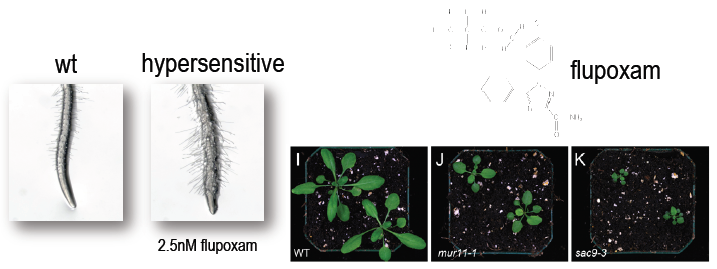
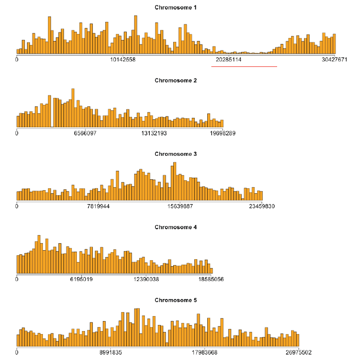
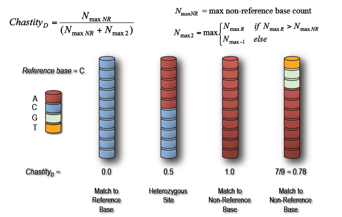
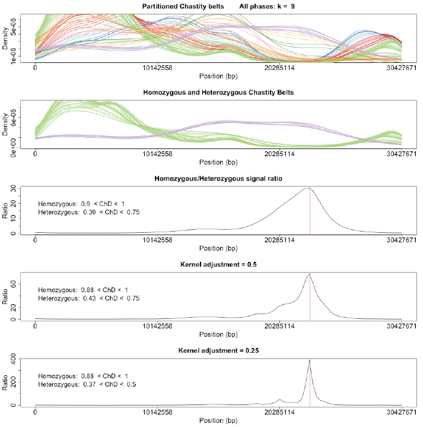
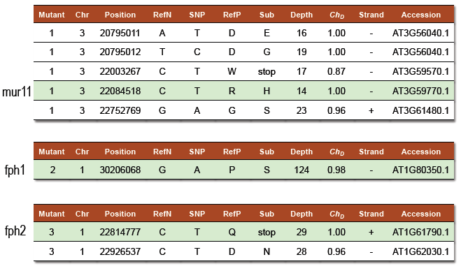
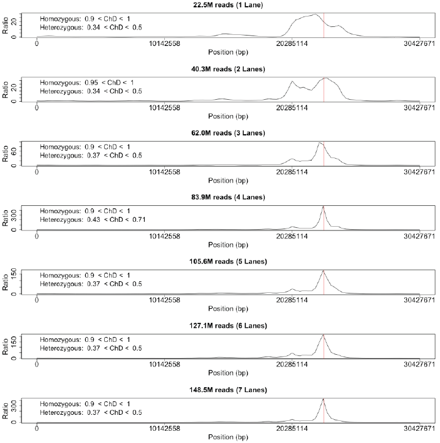
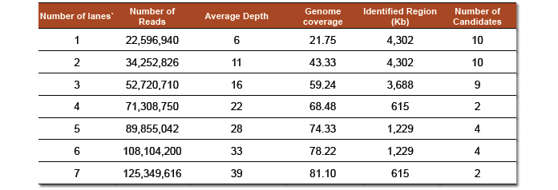

Introduction
Forward genetic screens hold great promise for identifying mutants with cell wall phenotypes of interest; however, the time and cost required to physical map these mutations can be considerable. We have developed a method to quickly and efficiently map recessive mutations identified in such screens using next-generation genomic technology, and validated the approach by mapping 3 Arabidopsis cell wall mutations. Briefly, F2 lines generated by crossing a mutant plant to a mapping line are sequenced en masse using a nextgeneration sequencing platform such as the Illumina Genome Analyzer, producing tens of millions of short reads, which are aligned to a reference genome using existing public domain software. We then apply our novel approach that identifies the mutation of interest by examining the distribution of SNPs between the mapping and mutant genomes. All 3 causal mutations were successfully identified and functionally confirmed in planta.
Cell wall mutant screen identifies 3 mutants
To identify cell wall related mutants we developed a screen, which involved identifying mutants that exhibited hypersensitivity to an herbicide (flupoxam) that specifically interferes with cell wall biosynthesis.2 This strategy relies on the principle that mutations in genes that lead to altered cell wall structure will exacerbate the deleterious effects caused by the herbicide. A known cell wall mutant (mur11)3 and two putative mutants, designated fph1 and fph2, were identifed in the screen.
- 
- Figure 1: An EMS mutagenized library was screened for hypersensitivity to the cellulose biosythesis inhibitor flupoxam (top right). Hypersensitivity to flupoxam leads to pronounced cellular distention, recognizable in the form of a club root phenotype with prolific root-hair growth (left) and stunted development compared to wild type (right).2
Mapping populations are next-gen sequenced
For each mutant, a mapping population of 80 F2 plants was sequenced en masse using Illumina's Genome Analyzer at 38 cycles paired-end. Between 115 and 300 million reads were then mapped to the TAIR9 genome using the Maq short read mapper to a depth of 29x, 74x and 39x respectively.1 Genome-wide SNPs were then pulled from the mapping and filtered with recommended quality score cutoffs.

- Figure 2: Crossing a recessive mutant with a mapping line to generate a mapping population of F2 individuals. A pooled collection of F2s with the mutant phenotype will possess a random admixture of both mutant and mapping lines except around the mutation of interest.
Natural variation reveals non-recombinant regions
SNP frequencies in the mapping population, binned at 250Kb intervals, show reproducible natural variation patterns across each chromosome. However, the non-recombinant region, possessing the mutation of interest, is a readily identifiable SNP desert. Such deserts were found in the telomeric regions of chromosome 3 and 1 for mur11 and fph1 respectively and in the right arm of chromosome 1 for fph2. Genome-wide SNP frequencies for fph2 are shown below.
- 
- Figure 3: The genome-wide SNP frequencies for fph2 binned at 250Kb intervals. A total of 310,103 SNPs were identified for this mutant. Of which, 222,555 SNPs were also present in one of the other mutants. A distinct SNP desert corresponding to the region of non-recombination is readily apparent on chromosome 1.
A modified chastity statistic classifies SNPs
In order to distinguish between SNPs arising from natural variation and those representing potential causal mutations, we devised a slightly modified version of Illumina's chastity statistic. Termed discordant chastity (ChD), the statistic measures the degree of difference between the SNP and the expected reference base. Using the mapping information comprising a SNP, the most frequent base that is not the reference base is compared to the next most common base after it.
- 
- Example 1: A hypothetical SNP site comprising base pairs from 10 Illumina sequence reads. A site with all bases in agreement to the reference base will possess a discordant chastity of 0.0, while one with all base pairs in disagreement will score 1.0. Due to the random admixture, SNPs arising from natural variation would be expected to be approximately equal from each line at 0.5.
Chastity belt partitioning localizes mutation
The positional SNP frequencies across the non-recombinant chromosome are partitioned into discordant chastity intervals (window=0.1, slide=0.01) and smoothed using kernel density estimation. K-means clustering of the resulting "threads" identifies distinct chastity belts, from which the signal corresponding to natural variation (ChD ~ 0.5) and that to mutation (ChD ~ 1.0) are extracted. The ratio of these two signals then provides an estimate of the mutation position. Repetition of the procedure at finer kernel sizes (adjustment = 0.5 and 0.25) decreases the amount of smoothing employed in the kernel density estimation to yield a more empirical representation of the data and thus a more refined estimation of the mutation position.
- 
- Figure 4: SNPs are partitioned into "chastity threads" based on their discordant chastity scores using kernel density estimation. Threads are then clustered into "chastity belts" with k-means and those belts corresponding to EMS-like signals and natural-variation signals extracted. The ratio of these two signals will identify the mutation region and repetition of the analysis at smaller kernel sizes will return a more refined estimate of the mutation region. The actual mutation position is denoted with a red line.
SNPs annotated and all mutants confirmed
SNPs localized using the above ratio are then annotated for their ability to cause a non-synonymous mutation in coding sequence or splice site disruption and filtered (ChD > 0.85). Results produced 5, 1 and 2 potential mutation candidates for each mutant respectively.
- 
- Tables 1-3: Candidate SNPs and their individual qualities. Each prediction produced a short list of candidate SNPs in which the actual mutation was confirmed to be present.
Approach is robust at reduced coverage
Since it would desirable to know the depth of coverage required to effectively apply our procedure, we replicated the analysis using incrementally increasing data. As our original analysis employed 7 lanes of an Illumina GA flow cell, the procedure was simply repeated using data from a single lane up to all 7 lanes. Although resolution was poor with a single lane, the mutation was still present in the results.
- 
- Figure 5: The final mapping results for fph2 using successively increasing amounts of data in the form of addition lanes of the flow cell. While the mutation was detectable with even a single lane of flow cell data, strong resolution and genomic coverage was not obtained until 4 lanes of the flow cell were incorporated.
- 
- Table 4: The effect of increasing the number of Illumina flow cell lanes on the number of reads available for mapping, the depth of coverage obtained, the genomic coverage acquired and the resulting mutation interval identified via our procedure with the number of potential mutant candidates for testing provided in the last column.
References
- 1 Li et al. Mapping short DNA sequencing reads and calling variants using mapping quality scores. Genome Res (2008) vol. 18 (11) pp. 1851-1858
- 2 Hoffman and Vaughn. Flupoxam Induces Classic Club Root Morphology but Is Not a Mitotic Disrupter Herbicide. Pestic Biochem Physiol (1996) vol. 55 (1) pp. 49-53
- 3 Reiter et al. Mutants of Arabidopsis thaliana with altered cell wall polysaccharide composition. Plant J (1997) vol. 12 (2) pp. 335-45